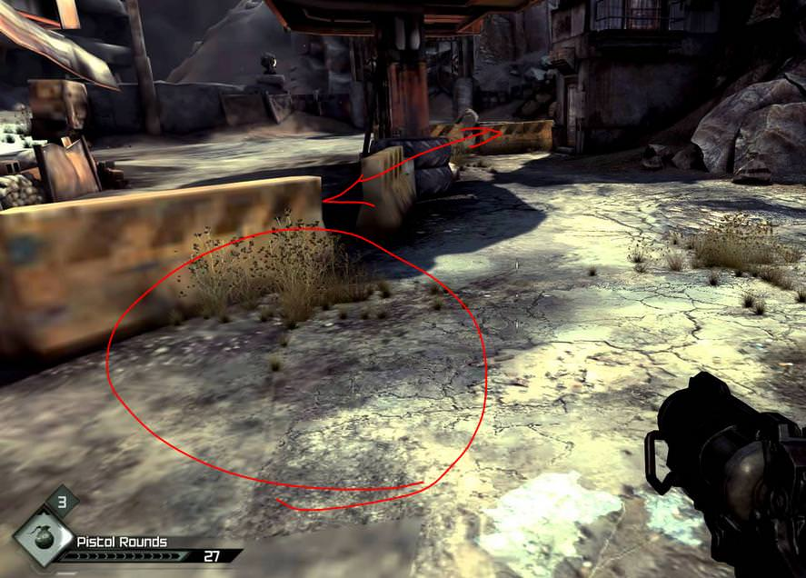
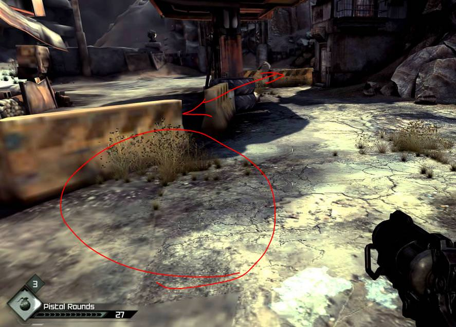

tomarlo4

how can i do player’s 3D area or map/texture load by streaming like this? like a distance of field rendering
to save ram and vram memory in big maps?
thx


how can i do player’s 3D area or map/texture load by streaming like this? like a distance of field rendering
to save ram and vram memory in big maps?
thx

There is asynchronous scene loading functionality. So you can load next location in background and switch to it on the fly.

Is that a screenshot of Rage? IIRC that uses
id Tech 5
engine with a revised implementation of
MegaTexture
from id Tech 4. That feature seems very specific to that engine. But I’m pretty sure someone dug into it for the fun of finding out how it was implemented and most likely made a detailed blog post about it. Heck, probably even made a demo. People usually do these things because it is quite interesting. Just try a
megatexture implementation
search on google. You are bound to find some leads. Sure, you’ll have to do some work too. Don’t expect everything on a plate.
this involves LOD, sometimes lod and sync/async render, you would need to first ask how to use lod in urho3d and im curious about this too hahaha’
With the asset importer tool. You basically tell it to combine several meshes into one file.

Fortunately I made a short video a while back on how to do this using Blender.

The required Blender plug-in can be found here . I’m not sure how LODs combine with asynchronous loading, though. You might have to split up the model anyway in order to load different levels of detail in a specific order. I dunno.

“I’m not sure how LODs combine with asynchronous loading, though.”
first async, after lod i suppose =S
borderlands have the same system
maybe its about distance too… distance of view or field, maybe?
(rendering by distance is possible? .-.)
a game i forget the name, u enter in a area and the textures load slow or just on time depending of ur HDD, when all is loaded, u go to a mission (that is a elevator), when u go to elevator, the door closes and while ure in the elevator the anterior area is “un-loaded” and the next area is loaded, when the next area appear by the other door in the elevator, textures load slow again, it repeat when u back
always saving memory
this is a good way to never lose performance =D